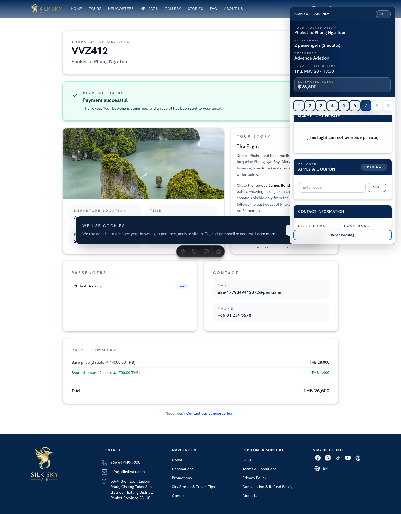
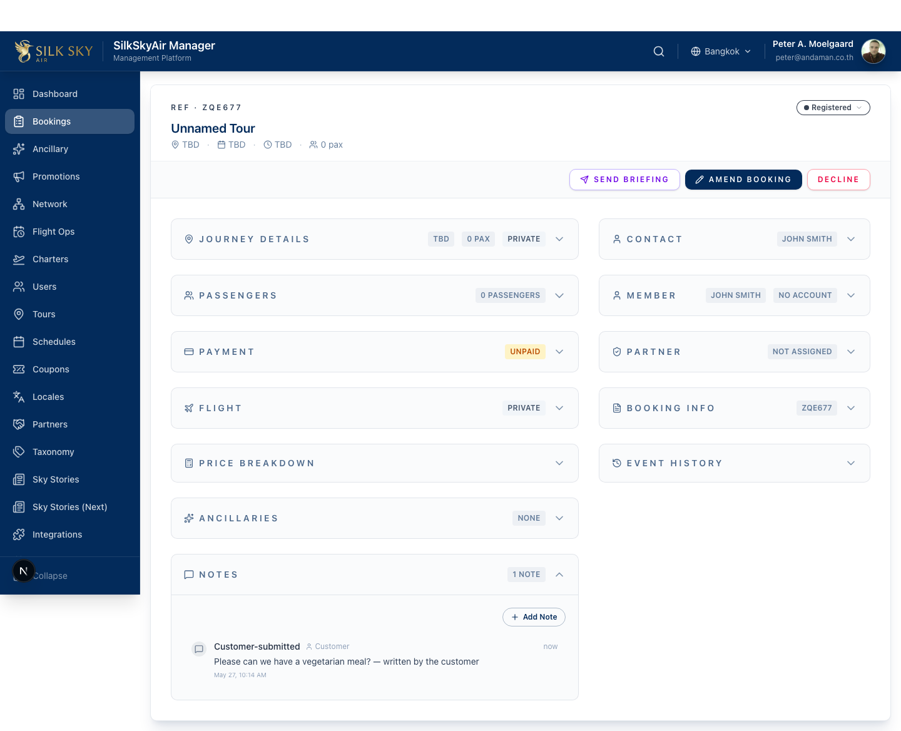
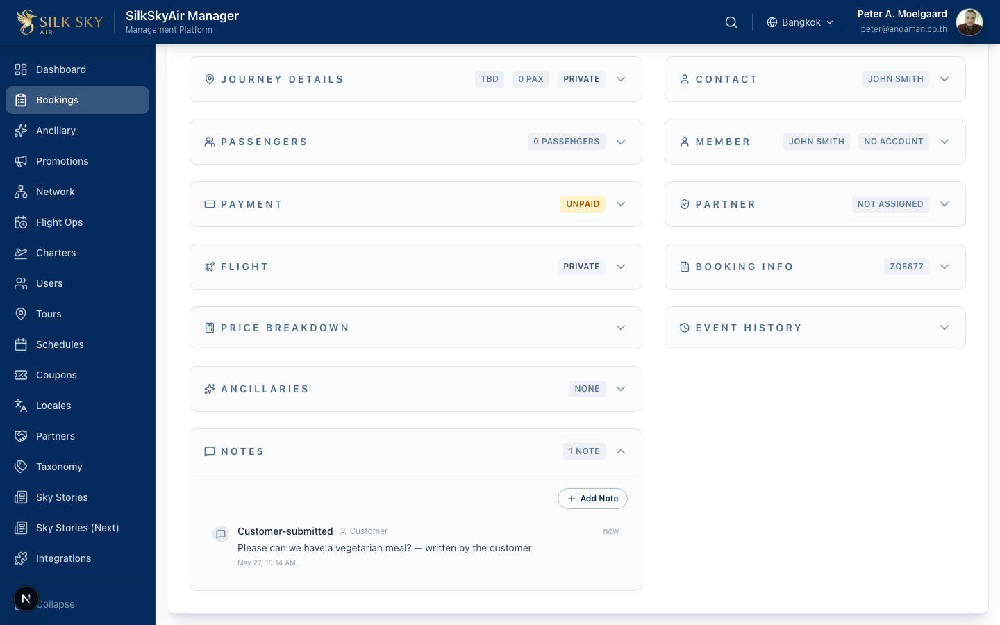

Customer Notes — End-to-End
Apps: WebSite (capture) → BackOffice (read — and protect) Who uses it: Customers (capture); support and operations staff (read). What it does: Customers can leave a note at checkout (allergies, special occasion, pickup instructions). The note rides through to BackOffice, where staff see it in the booking's Notes timeline. The note is read-only in BackOffice — staff cannot edit it, so a customer's words cannot be silently overwritten. To add context, staff create a new note.
Before you start
- WebSite staging:
https://staging.www.silkskyair.com - BackOffice staging:
https://staging.manager.silkskyair.com - Account:
peter@andaman.co.thfor the BackOffice half. No account needed for the WebSite half (guest checkout). - Prerequisites: none — this walkthrough creates the booking.
Part A — Customer adds a note (WebSite)
Step 1 — Reach the Contact Info step
Run through the booking flow until the widget reaches the Contact Info step (after picking date + pax, before payment). The notes textarea is visible alongside the contact fields.
What you should see: Email field, plus a Note textarea ([data-contact-note]) with a 500-character limit.
Step 2 — Type a note
Enter a short note. For training purposes, use something recognisable like "Birthday — please bring a small cake".
What you should see: The textarea echoes the text. The note is included in the data submitted on the next step.
Step 3 — Complete payment
Continue through the standard payment flow with the test card (see Payment-Before-Confirmation).

What you should see: The confirmed step with a booking reference code. The note has been saved against the booking record.
Part B — Staff sees the read-only customer note (BackOffice)
Step 4 — Open the booking
Sign in to BackOffice and navigate to Bookings. Open the booking you just created.

What you should see: The booking detail page. The Notes timeline shows the customer's note as a row with the cursor-default style and the hover title "Customer-submitted notes are read-only".
Step 5 — Hover the customer note row
Hover the customer-submitted note row.

What you should see: The cursor remains a regular pointer (not a clickable hand). The hover tooltip says "Customer-submitted notes are read-only". Clicking the row does nothing — it does not open an editor. This is the safety net that prevents staff from accidentally overwriting the customer's words.
Tips & common questions
- Why can't I edit the customer's note? By design. The customer typed those words; staff should not silently overwrite them. If the customer asks you to update their note, type a follow-up note that quotes their original — the audit trail remains intact.
- How do I tell a customer note apart from a staff note in the timeline? Customer notes have a fixed cursor and the read-only tooltip; staff notes have a pointer cursor and open an editor on click. In the underlying DOM they carry
data-customer-note="true"andaria-disabled="true". - Where do customers see their note? It's saved on the booking and included in the confirmation email.
- Is the note PII? Treat it as PII. Don't paste customer notes into Slack or screenshots outside this manual.